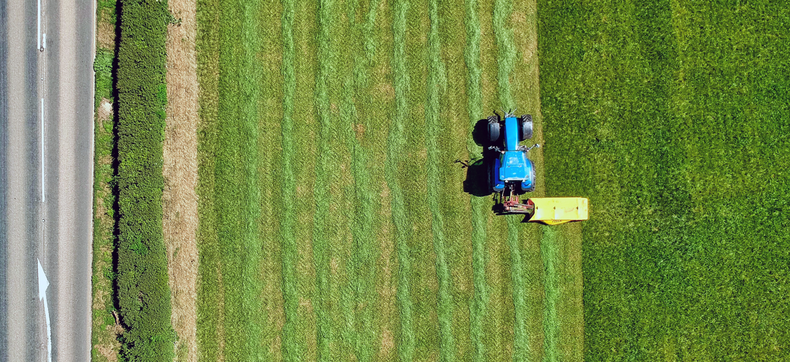
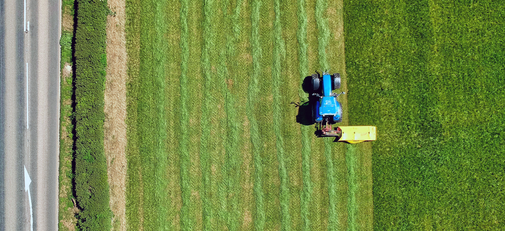

よくあるご質問
Q.
ご利用について
農業用ドローンの主な用途は何 ですか？
農業用ドローンの主な用途は何ですか？
農業用ドローンは、作物の健康状態のモニ タリング、除草剤・肥料等の散布、灌漑シ ステムの管理など、農業生産の効率を向上 させるために使用されます。
農業用ドローンは、作物の健康状態のモニタリング、除草剤・肥料等の散布、灌漑システムの管理など 、農業生産の効率を向上させるために使用されます。
Q.
ご利用について
製品について
農業用ドローンの導入による主 な利点は何ですか？
農業用ドローンの導入による主な利点は何ですか？
農業用ドローンの導入により、労働力を削 減し作業効率を向上させることができます 。また、病害虫の早期発見や適切な散布が 可能となり、生産性や質を向上させること ができます。
農業用ドローンの導入により、労働力を削減し作業効率を向上させることができます。また、病害虫の 早期発見や適切な散布が可能となり、生産性や質を向上させることができます。
Q.
ご利用について
製品について
農業用ドローンの種類は？
農業用ドローンの種類は？
フィックスウィング（固定翼）ドローン、 ロータリーウィング（回転翼）ドローン、 および、マルチコプター（複数のプロペラ を持つ）ドローンがあります。
フィックスウィング（固定翼）ドローン、ロータリーウィング（回転翼）ドローン、および、マルチコ プター（複数のプロペラを持つ）ドローンがあります。
Q.
ご利用について
使用について
農業用ドローンの価格はどのくらいですか？
農業用ドローンの価格はどのくらいですか？
ドローンの種類、性能、機能によって価格 は異なりますが、一般的には数万円から数 百万円の範囲で販売されています。
ドローンの種類、性能、機能によって価格は異なりますが、一般的には数万円から数百万円の範囲で販 売されています。
Q.
製品について
特別な免許や資格は必要ですか ？
特別な免許や資格は必要ですか？
農業用ドローンの操縦には、国によって異 なるが、無人航空機操縦士免許やドローン 操縦資格が必要とされる場合があります。
農業用ドローンの操縦には、国によって異なるが、無人航空機操縦士免許やドローン操縦資格が必要と される場合があります。
Q.
使用について
農業用ドローンの法規制は何で すか？
農業用ドローンの法規制は何ですか？
国や地域によって異なりますが、一般的に は飛行高度、飛行速度、操縦者とドローン の距離、人口密集地や空港周辺の飛行に関 する制限が設けられています。
国や地域によって異なりますが、一般的には飛行高度、飛行速度、操縦者とドローンの距離、人口密集 地や空港周辺の飛行に関する制限が設けられています。